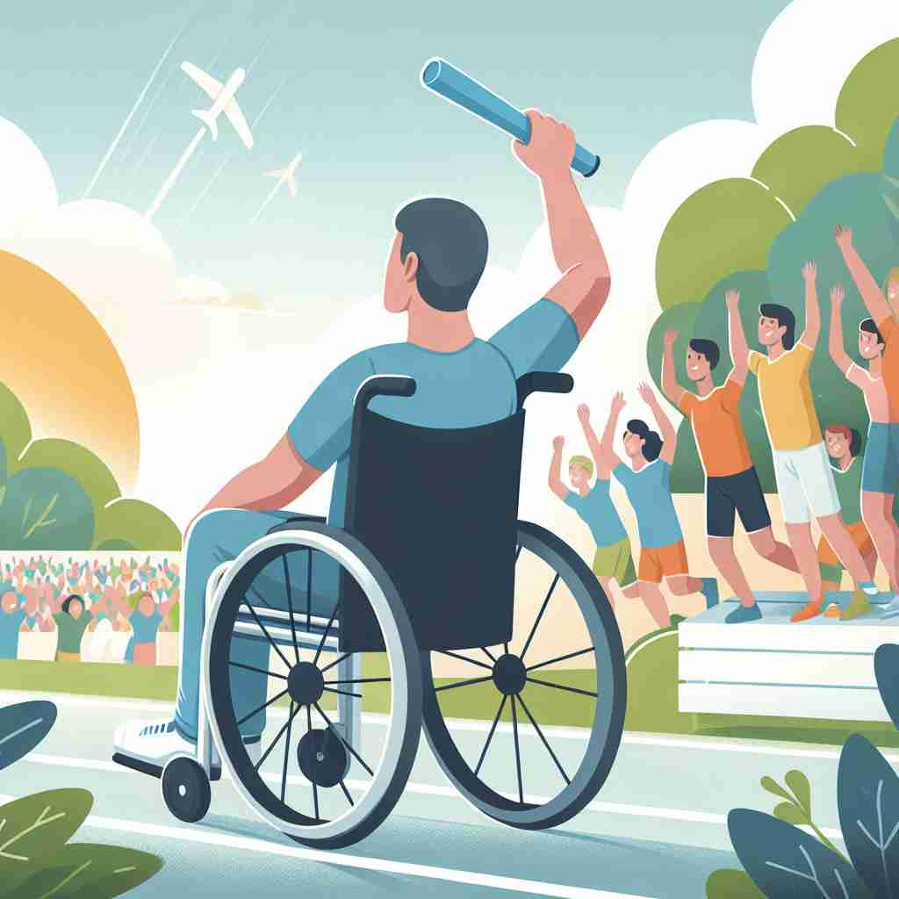

💬 The handicapped athlete inspired everyone at the race.

💬 The handicapped individual enjoys the sunny day outside.
🔈 ['hændɪkæpt]
🗝️ adj. having a physical or mental condition that limits their movements, senses, or activities
🖼️ 在一个阳光明媚的公园里，大家正享受着美好的一天。在一条专为轮椅使用者设计的小径上，一位面带微笑的年轻男子乘坐着轮椅，周围的人友好地避让，为他留出了更多空间。这一幕展示了'handicapped'作为形容某人因身体或心理状况导致行动、感官或活动受限的意义。
🔍 理解'handicapped'的关键在于把握其核心含义：某种限制或障碍。无论是指身体、心理状况，还是延伸到其他方面的劣势，都体现了这一核心概念。想象一个人因各种原因而行动受限，这种形象可以帮助你记住和理解这个词的各种用法。
💬 The handicapped athlete inspired everyone at the race.
💬 The handicapped individual enjoys the sunny day outside.
🌳 由基本词 'handicap'（障碍，阻碍）加上形容词后缀 '-ed' 组成，用于描述有身体或精神残疾的人。
💡 记忆 'handicapped' 时，可以联想 'handicap' 加 '-ed'，表示被障碍影响的状态，例如身体或智力方面的限制。
🗝️ adj. placed at a disadvantage
🖼️ 在一场激烈的棋赛中，一名参赛者因临时丢失了一颗棋子而必须用代用品继续比赛。对手鼓励他，说道：“别灰心，尽管处于一些劣势，你依然有获胜的机会。”这情景展示了'handicapped'作为形容处于劣势的意义。
💬 The team was handicapped by the absence of their star player.
❓ 从身体或心理障碍引申到任何不利条件
🗝️ v. to place at a disadvantage
🖼️ 在一场足球比赛中，裁判判罚了一次点球，一个队友对此表示不满，认为裁判的决定让他们队伍'handicapped'，即在接下来的比赛中处于不利状态。教练鼓励队员们要团结一致，应对这不利局面。这个场景展示了'handicapped'作为动词，意指使某人置于不利地位的意义。
💬 His lack of experience handicapped him in the job market.
❓ 将形容词意义动词化，表示造成不利影响